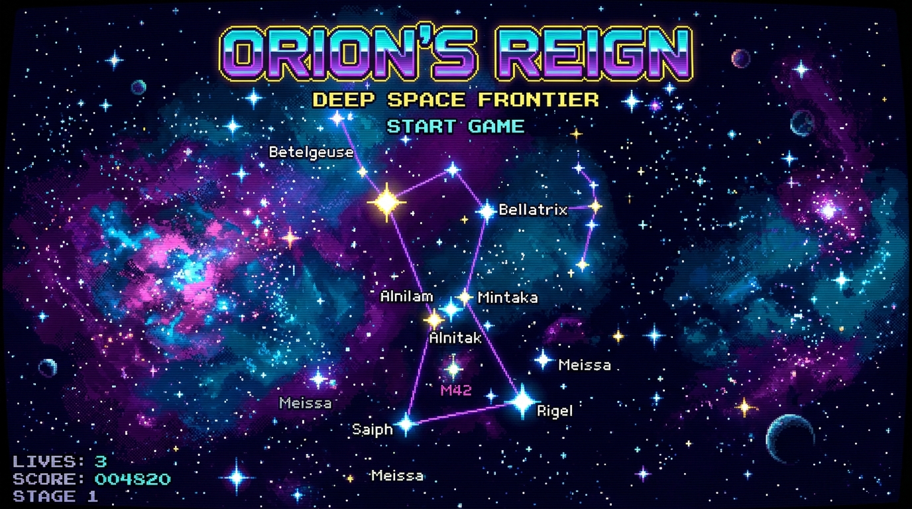

Pilota la nave estelar en la constelación de Orión. Destruye los asteroides cósmicos, neutraliza los drones invasores y recolecta cápsulas de energía [P] para potenciar tu fuego.
MOVIMIENTO: ◄ ▲ ▼ ► / W A S DDISPARO: BARRA ESPACIO
🕹️ SALA DE JUEGOS VIRTUALES
JUGABLE AHORA

ORIÓN: DEFENSOR ESPACIAL
Acción retro Shoot 'em up en el corazón de la nebulosa de Orión. Destruye meteoros y acumula el récord supremo.
POPULAR
📜
QUIZ 8-BIT
TRIVIA BÍBLICA 8-BIT
Pon a prueba tus conocimientos de historias bíblicas, profecías y personajes en formato interactivo retro.
EN DESARROLLO
🧭
PIXEL LABYRINTH
LABERINTO CONQUISTADOR
Explora sendas pixeladas, rescata campistas extraviados y recolecta insignias para llegar al campamento base.
PRÓXIMAMENTE
✨
MEMORY MATCH
MEMORIA CELESTIAL
Empareja constelaciones celestiales, símbolos bíblicos y versículos en un juego de memoria visual cronometrado.
🏆 SALÓN DE LA FAMA • TOP SCORES
POS
PILOTO
PUNTAJE
FECHA
📱 MANDO INALÁMBRICO
Escanea este código QR con la cámara de tu celular para convertirlo en un control arcade: